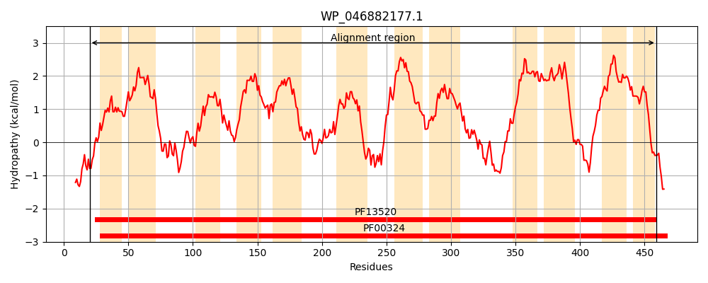
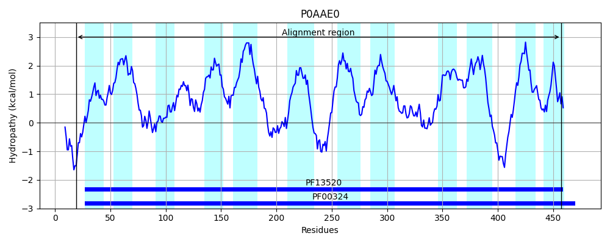
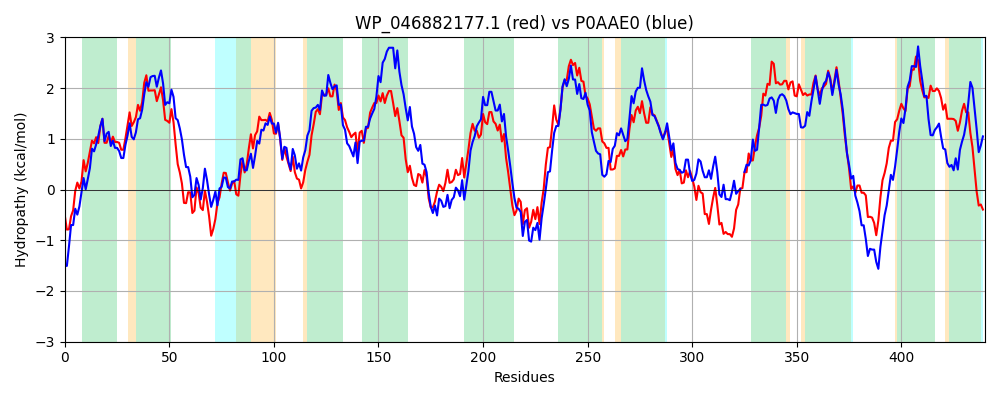

Hit Accession: P0AAE0
Hit TCID: 2.A.3.1.7
Hit Description: gnl|BL_ORD_ID|8658 gnl|TC-DB|P0AAE0|2.A.3.1.7 D-serine/D-alanine/glycine transporter - Escherichia coli.
Mach Len: 440
e:0.000000
Query TMS Count : 12
Hit TMS Count: 12
TMS-Overlap Score: 11.550000
Predicted Substrates:CHEBI:5584;hydron, CHEBI:4087;D-alanine, CHEBI:4245;D-serine, CHEBI:5460;glycine, CHEBI:9116;serine, CHEBI:40009;D-cycloserine
BLAST Alignment:
Score: 1289 , Bit scores: 501 bits, E-value: 1.0e-175, Alignment length: 440, Percentage identity: 54
Query: 20 LKRGLGARHIQMIALGGAIGTGLFMGAGRNIAVAGTSILVIYVLVGFFTYMVMRAMGELLLTRHDYRSFADFVGEYLGPQASFYLGWTYWLSWVVTCIADVVVCGSYMQYWFPELSAWMPALSMLAILFLLNLLSVKMFGEAEFWFALIKVITIIALIGTGGWMIATGWTSPDGVTASLSHLTDPTAFMPHGITGFFAGFQIAIFSFTGIELLGTMTAETRDPQRILPKAINALPLRIIIFYLLSMVVIIAVASWPGVSAETSPFVTLFAKAGLPAAAAVINFVALTSAMSSANSGVFSSTRMLYGLSVEKHAHWQFRILSRNTRIPVRSLLFSCFCMLIGTLLLFLVPNVMTLFTIVSTLAAIMVVFSWGMILVAYLVYRRQRPDLHAGSIFKMPAGVVMSWVSLLFFAFAIFIMIFDPDTLLALLASPLWFIALWGFW 459
L+R L RHIQ+IA+GGAIGTGLFMG+G+ I++AG SI+ +Y+++GF + VMRAMGELLL+ +Y+SF+DF + LGP A ++ GWTYW WVVT +ADVV +Y Q+WFP+LS W+ +L+++ +L LNL +VKMFGE EFWFA+IK++ I++LI G M+A + SP GV AS +HL + + P G++GFFAGFQIA+F+F GIEL+GT AET+DP++ LP+AIN++P+RII+FY+ +++VI++V W V E SPFV LF GLPAAA+VINFV LTSA SSANSGVFS++RML+GL+ E A F LS+ +P + L FSC C+L G ++L++ P+V+ FT+++T++AI+ +F W +IL +YLVYR+QRP LH SI+KMP G +M WV + FF F + ++ + DT ALL +PLWFIAL W
Sbjct: 19 LRRNLTNRHIQLIAIGGAIGTGLFMGSGKTISLAGPSIIFVYMIIGFMLFFVMRAMGELLLSNLEYKSFSDFASDLLGPWAGYFTGWTYWFCWVVTGMADVVAITAYAQFWFPDLSDWVASLAVIVLLLTLNLATVKMFGEMEFWFAMIKIVAIVSLIVVGLVMVAMHFQSPTGVEASFAHLWNDGGWFPKGLSGFFAGFQIAVFAFVGIELVGTTAAETKDPEKSLPRAINSIPIRIIMFYVFALIVIMSVTPWSSVVPEKSPFVELFVLVGLPAAASVINFVVLTSAASSANSGVFSTSRMLFGLAQEGVAPKAFAKLSKRA-VPAKGLTFSCICLLGGVVMLYVNPSVIGAFTMITTVSAILFMFVWTIILCSYLVYRKQRPHLHEKSIYKMPLGKLMCWVCMAFFVFVVVLLTLEDDTRQALLVTPLWFIALGLGW 457 | Protein Hydropathy Plots: |
|---|
|  |  |
Pairwise Alignment-Hydropathy Plot:
|
|---|
|  |